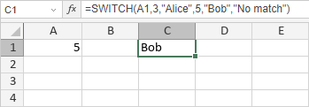

SWITCH Funkcija
SWITCH funkcija je jedna od logičkih funkcija. Koristi se za evaluaciju jedne vrednosti (nazvane izraz) u odnosu na listu vrednosti i vraća rezultat koji odgovara prvoj podudarajućoj vrednosti. Ako nema podudaranja, može se vratiti opcioni podrazumevani rezultat.
Sintaksa
SWITCH(expression, value1, result1, [default_or_value2, result2], ...)
SWITCH funkcija ima sledeće argumente:
| Argument | Opis |
|---|---|
| expression | Vrednost koja će se uporediti sa value1 ...value126. |
| value1 ...value126 | Vrednost koja će se uporediti sa expression. |
| result1 ...result126 | Rezultat koji će biti vraćen ako value1 ...value126 odgovara expression. |
| default | Rezultat koji će biti vraćen ako nema podudaranja. Ako default argument nije specificiran i nema podudaranja, funkcija vraća #N/A grešku. |
Napomene
Možete uneti do 254 argumenata, odnosno do 126 parova vrednosti i rezultata.
Kako primeniti SWITCH funkciju.
Primeri
Slika ispod prikazuje rezultat koji vraća SWITCH funkcija.
